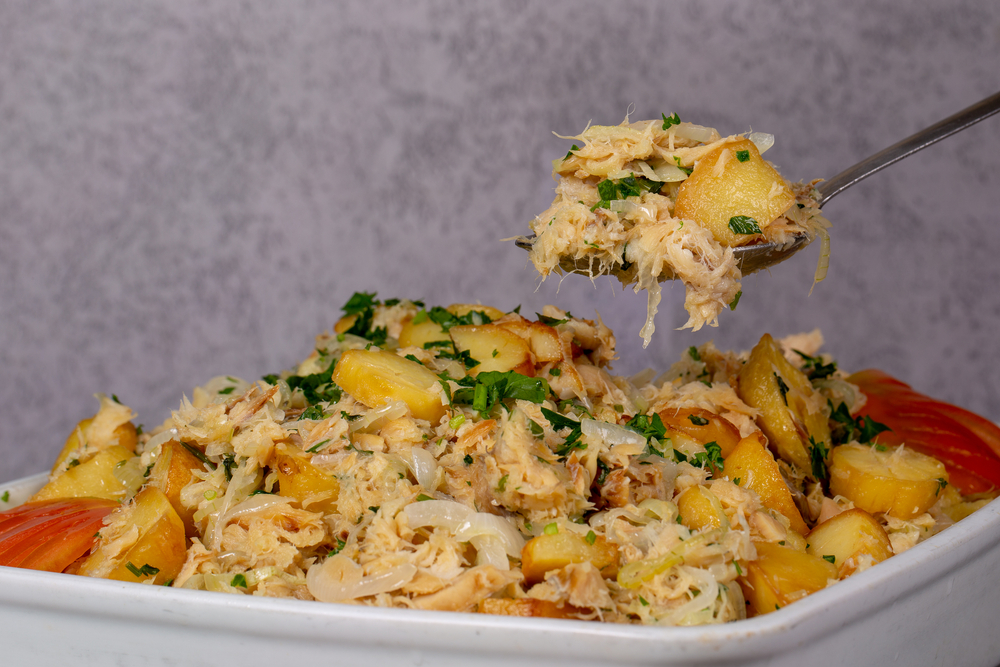

Bacalhau à Brás

Introduction
Bacalhau à Brás is one of the recipes most appreciated by the Portuguese. Easy and quick to make, you can easily adapt the method and experiment with fish, shredded chicken, or leek.
Imgredients
- 1 q.b. fresh salsa
0li>400 g potatoes
- 450 g (2 units) soaked cod loin
- 1 L oil
- 2 tbsp olive oil
- 2 cloves garlic
- 1 leaf bay leaf
- 2 units eggs (size M)
- q.b. black olives
- 1 unit onion
Steps
- Fry the potatoes in oil until golden and crispy. Set aside.
- Heat olive oil in a large pan and sauté the onion until soft.
- Add the garlic and cook for another minute.
- Stir in the shredded cod and cook for a few minutes.
- Add the fried potatoes and mix well.
- Beat the eggs and pour them into the pan.
- Stir gently until the eggs are softly cooked but still creamy.
- Season with salt and pepper.
- Garnish with black olives and chopped parsley before serving.
Outro
Bacalhau à Brás is a simple yet flavorful dish that highlights one of Portugal’s most beloved ingredients: cod. With its creamy eggs, crispy potatoes, and savory cod, it’s a comforting recipe that comes together quickly. Serve it hot, topped with black olives and fresh parsley, for a traditional Portuguese meal.
Home